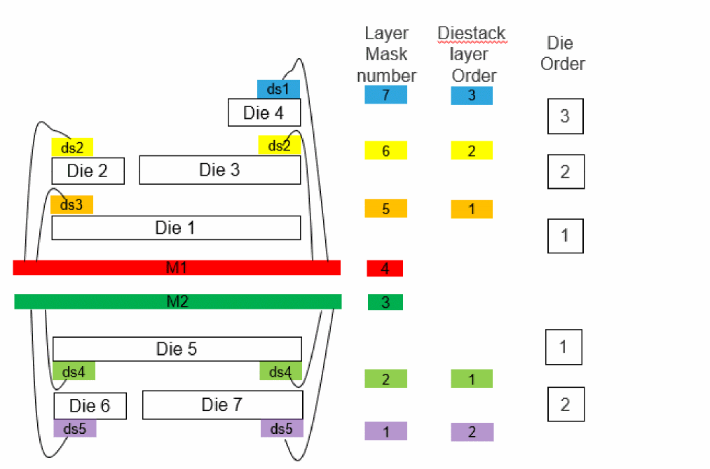

Die/TILP Instantiation
You can instantiate die footprints of ICs in the package layout from package library. IC/die footprint is the cellview in Virtuoso representing an IC design that includes the layout, schematic, and symbol. Exported die is the cellview that represents the footprint of the Die/IC/package, which will be instantiated in the package design. It contains an abstract, TILP, schematic, and symbol view. IO cell is also instantiated in the die/IC layout to represent its external connectivity.
The package layout cells (TILP footprints) that can be designed, much before the layers are identified, by using the SMDs or exported dies through a technology file created from a .sip file. TILPs are created from the die symbols or package symbols and are added to the libraries as die TILP, SMD TILP, package TILP, and so on. The die or package symbols are created from the footprint terminals of a base layout cell. Subsequently, the TILP is instantiated in a parent cell. It can be imported into the parent cell through an export die library. Before creating TILPs, ensure that the die abstract that is used at the package level is accurate.
Die TILPs support rotation and mirroring. You can attach die TILP on the package layer in various positions. It could be unflipped, flipped, or mirrored. They can be added on the package substrate at an angle.
There is also a possibility of applying a shrinking factor to reduce boundary and transform the padStack. Following are some terms associated with placing multiple dies on the package substrate:
- Die order- It is the order of a die in a die stack on the package substrate. It could be a stack of package too.
- Die stack layer- It prevents 2D connectivity extractor to report false short between overlapping padStacks.
-
Die stack layer order- Based on the layer mask number, the diestack layer order is the position of the diestack layer from the metal layer. The diestack layer order is not saved in a techFile but automatically derived from the layer mask number.

Exporting the die is an essential step before creating TILPs to be used in the package layouts but you need to prepare the die data before die export.
Related Topics
Return to top